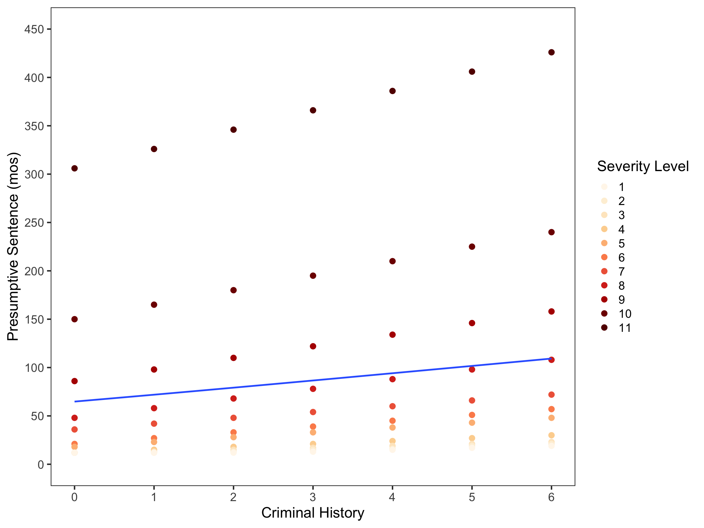
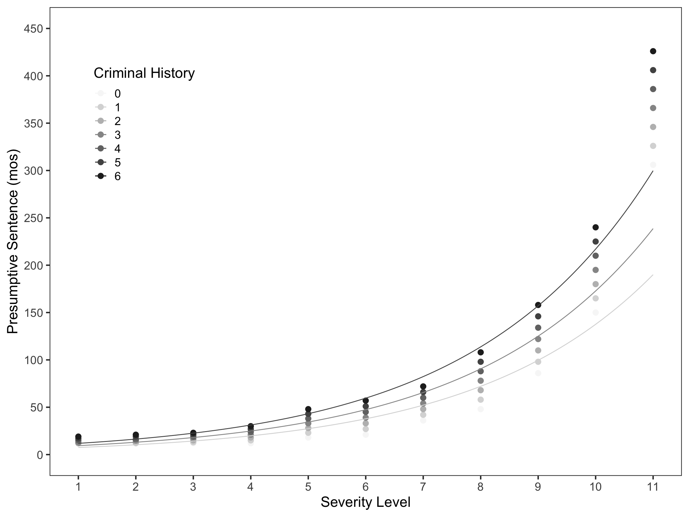

Figure 1: Scatterplot of the relationship between felony severity level and presumptive sentence controlling for criminal history.

Figure 2: Scatterplot of the relationship between felony severity level and presumptive sentence controlling for criminal history.
Fitting a model
The following model will be use to investigate the relationship between presumptive sentence and felony severity level controlling for criminal history.
\[
\begin{split}
\mathrm{Model~1}: \hat{\mathrm{ln(Pres~Sent_i)}} &= 1.58 + 0.323(\mathrm{Off~Sev~Lev}_i) + 0.114(\mathrm{Crim~Hist}_i)
\end{split}
\] ## Interpretting the model
\[
\begin{split}
\hat{\mathrm{ln(Pres~Sent_i)}} &= 1.58 + 0.323(\mathrm{Off~Sev~Lev}_i) + 0.114(\mathrm{Crim~Hist}_i)
\\[1em]
\hat{\mathrm{Pres~Sent_i}} &= e^{1.58} \times e^{0.323(\mathrm{Off~Sev~Lev}_i)} \times e^{0.114(\mathrm{Crim~Hist}_i)}
\\[1em]
\hat{\mathrm{Pres~Sent_i}} &= e^{1.58} \times e^{0.323(1)} \times e^{0.114(1)}
\\[1em]
\hat{\mathrm{Pres~Sent_i}} &= 4.85 \times 1.38 \times 1.12
\end{split}
\] The y-intercept for Model 1 is 4.85. This number cannot be interpreted into a meaningful context, because 0 is not a felony severity used by the Minnesota Sentencing Guidelines Commission. Each 1-unit change in offense severity level is associated with a 1.38-fold increase in presumptive sentence, and each 1-unit change in criminal history is associated with a 1.12-fold increase in presumptive sentence.
Fitting a curve to the data

Figure 3: Best fits for criminal histories of 1, 3 and 5.
Source Code
---title: "Sentencing Grid"format: html: fig-width: 12 fig-height: 9editor: visualexecute: echo: falsecode-tools: true---```{r}#| message: false#| echo: false#| warning: falselibrary(broom)library(corrr)library(ggtext)library(gt)library(kableExtra)library(knitr)library(lmtest)library(patchwork)library(scales)library(stargazer)library(texreg)library(tidyverse)library(RColorBrewer)sg <-read_csv("sentencing_grid.csv")glimpse(sg)```## Investigating the relationships```{r}#| message: false#| echo: false#| warning: false#| label: fig-scatter#| fig-cap: "Scatterplot of the relationship between felony severity level and presumptive sentence controlling for criminal history."f1 <-ggplot(data = sg, aes(x = severity_level, y = presumptive_sentence)) +geom_point(aes(color =factor(criminal_history)), alpha =1, size =3) +theme_bw(base_size =18) +theme(panel.grid =element_blank(),axis.title.x =element_markdown(),axis.title.y =element_markdown() ) +geom_smooth(se =FALSE) +scale_x_continuous(name ="Severity Level",limits =c(1, 11),breaks =c(1, 2, 3, 4, 5, 6, 7, 8, 9, 10, 11) ) +scale_y_continuous(name ="Presumptive Sentence (mos)",limits =c(0, 450),breaks =c(0, 50, 100, 150, 200, 250, 300, 350, 400, 450) ) +scale_color_manual(name ="Criminal History", values =c("0"="#f7f7f7", "1"="#d9d9d9", "2"="#bdbdbd", "3"="#969696", "4"="#737373", "5"="#525252","6"="#252525"), breaks =c("0", "1", "2", "3", "4", "5", "6"))# The relationship between criminal history level and presumptive sentencef2 <-ggplot(data = sg, aes(x = criminal_history, y = presumptive_sentence)) +geom_point(aes(color =factor(severity_level)), alpha =1, size =3) +theme_bw(base_size =18) +theme(panel.grid =element_blank(),axis.title.x =element_markdown(),axis.title.y =element_markdown() ) +geom_smooth(se =FALSE) +scale_x_continuous(name ="Criminal History",limits =c(0, 6),breaks =c(0, 1, 2, 3, 4, 5, 6) ) +scale_y_continuous(name ="Presumptive Sentence (mos)",limits =c(0, 450),breaks =c(0, 50, 100, 150, 200, 250, 300, 350, 400, 450) ) +scale_color_manual(name ="Severity Level",values =c("1"="#fff7ec", "2"="#fef0d9", "3"="#fee8c8", "4"="#fdd49e", "5"="#fdbb84", "6"="#fc8d59", "7"="#ef6548", "8"="#d7301f","9"="#b30000", "10"="#7f0000", "11"="#630000"), breaks =c("0", "1", "2", "3", "4", "5", "6", "7", "8", "9","10", "11") )f1f2```## Fitting a modelThe following model will be use to investigate the relationship between presumptive sentence and felony severity level controlling for criminal history.```{r}# Fit regression model to investigate the effects of criminal history and severity# level on presumptive sentencelm.1<-lm(log(presumptive_sentence) ~1+ severity_level + criminal_history, data = sg)# Model levelg1 <-glance(lm.1)# Coefficient levelt1 <-tidy(lm.1)```$$\begin{split}\mathrm{Model~1}: \hat{\mathrm{ln(Pres~Sent_i)}} &= 1.58 + 0.323(\mathrm{Off~Sev~Lev}_i) + 0.114(\mathrm{Crim~Hist}_i)\end{split}$$ ## Interpretting the model$$\begin{split}\hat{\mathrm{ln(Pres~Sent_i)}} &= 1.58 + 0.323(\mathrm{Off~Sev~Lev}_i) + 0.114(\mathrm{Crim~Hist}_i)\\[1em]\hat{\mathrm{Pres~Sent_i}} &= e^{1.58} \times e^{0.323(\mathrm{Off~Sev~Lev}_i)} \times e^{0.114(\mathrm{Crim~Hist}_i)}\\[1em]\hat{\mathrm{Pres~Sent_i}} &= e^{1.58} \times e^{0.323(1)} \times e^{0.114(1)}\\[1em]\hat{\mathrm{Pres~Sent_i}} &= 4.85 \times 1.38 \times 1.12\end{split}$$The y-intercept for Model 1 is 4.85. This number cannot be interpreted into a meaningful context, because 0 is not a felony severity used by the Minnesota Sentencing Guidelines Commission. Each 1-unit change in *offense severity level* is associated with a **1.38-fold increase** in presumptive sentence, and each 1-unit change in *criminal history* is associated with a **1.12-fold increase** in presumptive sentence. ## Fitting a curve to the data```{r}#| message: false#| echo: false#| warning: false#| label: fig-fits#| fig-cap: "Best fits for criminal histories of 1, 3 and 5."ggplot(data = sg, aes(x = severity_level, y = presumptive_sentence)) +geom_point(aes(color =factor(criminal_history)),alpha =1, size =3) +scale_x_continuous(name ="Severity Level",limits =c(1, 11),breaks =c(1, 2, 3, 4, 5, 6, 7, 8, 9, 10, 11) ) +scale_y_continuous(name ="Presumptive Sentence (mos)",limits =c(0, 450),breaks =c(0, 50, 100, 150, 200, 250, 300, 350, 400, 450) ) +scale_color_manual(name ="Criminal History", values =c("0"="#f7f7f7", "1"="#d9d9d9", "2"="#bdbdbd", "3"="#969696", "4"="#737373", "5"="#525252","6"="#252525"), breaks =c("0", "1", "2", "3", "4", "5", "6")) +geom_function(fun =function(x) {exp(1.58) *exp(0.323* x) *exp(0.114)}, aes(color ="1")) +#History = 1geom_function(fun =function(x) {exp(1.58) *exp(0.323* x) *exp(0.342)}, aes(color ="3")) +#History = 3geom_function(fun =function(x) {exp(1.58) *exp(0.323* x) *exp(0.570)}, aes(color ="5")) +#History = 5 theme_bw(base_size =18) +theme(panel.grid =element_blank(),axis.title.x =element_markdown(),axis.title.y =element_markdown(),legend.position =c(0.15, 0.75) ) +xlab("Offense Severity Level") +ylab("Presumptive Sentence")```